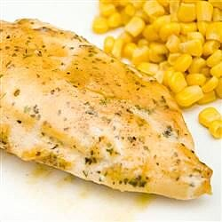

Baked Honey Mustard Chicken

Description
Quick and easy to prepare, and the kids love it too!
Ingredients
- 6 skinless, boneless chicken breast halves
- salt and pepper to taste
- ½ cup honey
- ½ cup prepared mustard
- 1 teaspoon dried basil
- 1 teaspoon paprika
- ½ teaspoon dried parsley
Steps
- Preheat oven to 350 degrees F (175 degrees C).
- Sprinkle chicken breasts with salt and pepper to taste,
and place in a lightly greased 9x13 inch baking dish. In a
small bowl, combine the honey, mustard, basil, paprika, and parsley.
Mix well. Pour 1/2 of this mixture over the chicken, and brush to cover.
- Bake in the preheated oven for 30 minutes. Turn chicken pieces over and brush with
the remaining 1/2 of the honey mustard mixture. Bake for an additional 10 to 15
minutes, or until chicken is no longer pink and juices run clear. Let cool 10 minutes
before serving.